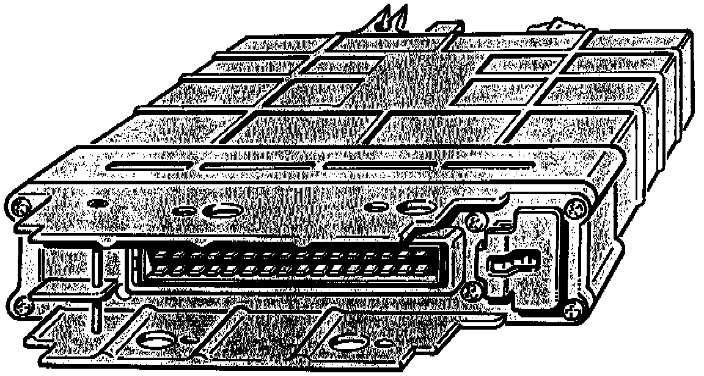

Control Module: Description and Operation
Transmission Control Module (TCM):

The control unit J 217
Is mounted in the vehicle away from the gearbox. It processes the signals from the information senders (sensors) and controls the actuating units according to the signals received.
The transmission control module is located under the rear seat on the left side of the vehicle. Or on some models on the right "A" pillar behind the kick panel.
The Digimat control unit has Self diagnosis with permanent memory. Stored faults are retained even when the battery is disconnected.
The Self diagnosis monitors the electrical signals from the information senders and to the actuating units and carries out a self check of the Digimat control unit.
With the Self Diagnosis one cannot check whether the individual information senders and actuating units are working properly mechanically.
When reading the Fault memory display and then eliminating the faults one must take into account components which could be indirectly connected with the indicated faults.
For example with the fault:
No signal from road speed sensor "G68"
The fault can be, as in most cases, a defective sensor a faulty wire. The fault will however also be indicated with a defective or loose impulse wheel for
the road speed, slipping clutches or a too low ATF main pressure. In all three cases the control unit will receive faulty signals.